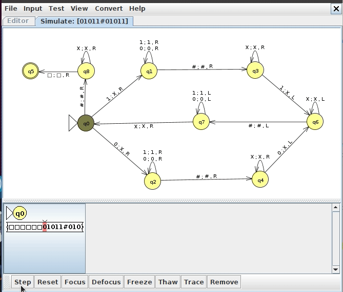
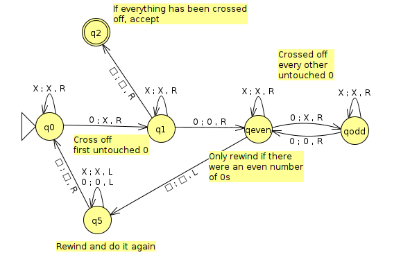
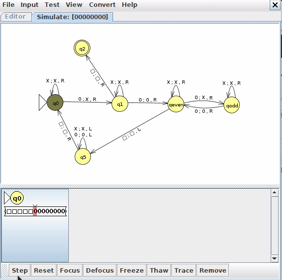
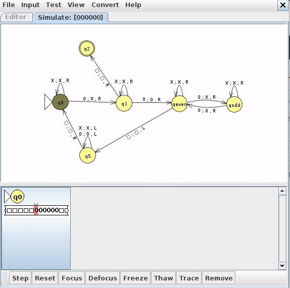
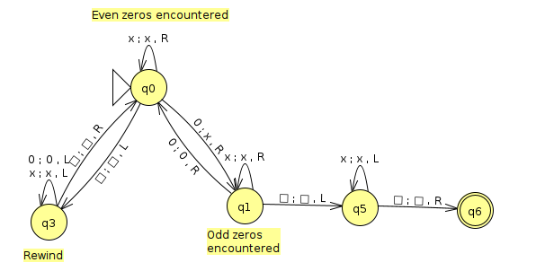

Week 7/8: Turing Machine Exmaples
Chris Tralie
For our purposes, a Turing machine can be thought of a 6-tuple (Q, Σ, Γ, δ, q0, F), where
- Q is a finite set of control states
- Σ is the input alphabet, which does not contain the blank symbol □
- Γ is the tape alphabet, where □ ∈ Γ and Σ ⊂ Γ. In other words, the tape alphabet has all of the symbols in the input alphabet, plus the blank symbol, plus possibly a more symbols.
-
δ is the transition function, which has the form
In other words, given a state and a tape character, transition to a new state, write a new tape character, and move the head left or right.
\[ Q \times \Gamma \rightarrow Q \times \Gamma \times \{ L, R \} \]
- q0 ∈ Q is the start state
- F ⊂ Q are a set of accept states. If the machine ends up in one of these states, it instantly accepts. We do this since the tape can move left or right, there's no clear way to declare when we're "finished." By contrast, PDAs and DFAs must step through their entire input from left to right before checking to see if they are in an accept state
Note that Sipser defines a single accept state, but we could easily show the equivalence with the above definition if all accept states simply transitioned instantly to a single accept state. Sipser also includes a seventh element in the tuple which is a reject state, but we'll follow JFLAP's convention where a machine instantly rejects if there's no transition arrow to follow that matches the current state and tape character at the head. This makes it a lot more like the PDAs we were defining.
Now let's look at a few examples
Example 1: w#w
Consider the language
\[ L = \{ w\text{#}w, w \in \{ 0, 1 \}^* \} \]
Or, in other words, some arbitrary binary string, followed by a #, followed by a repeat of the string. We showed using the context free pumping lemma that this is not context free (intuitively, if we try to remember the first repetition of the string, the stack goes the "wrong way" for the second repitition), but we can recognize it with a Turing machine. Since we can now write to the tape, what we do is write an X over a character on the left side, then jump forward until we get to the right side and check to make sure the crossed out character is the same. If so, we rewind and cross off the next character and repeat. If not, we instantly reject. If we make it to the end and everything we've tried on the left has matched to everything on the right, we make sure that we actually crossed everything off on the right. If we did, then we accept.
Below is an image of a Turing machine that enacts this in JFLAP (click here to download the JFLAP file)

Below is an animation of this machine running on the input 01011#01011
Example 2: Power of 2 Zeros
Consider the language
\[ L = \{ 0^{2^N}, N \geq 0 \} \]
Or, in other words, the language of strings of 0s in which the number of 0s is a power of 2. You'll prove in homework 6 that this language is not context free, but we can do it with a Turing machine. What we want to do is to effectively halve the number of 0s on the tape at every step. If we are able to keep halving and we get to a single 0, then we must have been a power of 2. To halve, we cross out every other 0. For instance, let's say that we had 8 zeros. Then each pass from left to right along the tape would do the following
- 00000000
- X0X0X0X0
- XXX0XXX0
- XXXXXXX0
- XXXXXXXX
One thing we have to be careful of is that we're actually halving the number of zeros left at each step. This will be true if the number of zeros that we haven't crossed off yet is always even.
Below is a screenshot of a JFLAP implementation of a turing machine that does this (click here to download the JFLAP file)
Below is an animation of this machine running on a string with 8 zeros
Below is an example of the machine rejecting the string with 6 zeros. Notice how it gets stuck on the odd state on the second pass.
UPDATE:
Dylan came up with an machine that does this with only 5 states instead of 6! Click here to download the JFLAP file, a screenshot of which is shown below
